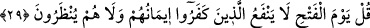
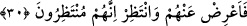

29. De ki: Fetih (ve hüküm) gününde inkârcılara (o gün ettikleri) îmanları fayda
vermeyecek ve kendilerine mühlet de tanınmayacaktır!
Onları susturmak ve hakkı pekiştirip ortaya koymak için “De ki:” Aceleci
davranmayın ve alaya da almayın. Çünkü “Fetih (ve hüküm) gününde” kıyâmetin
koparılması ile şüphenin giderildiği günde -ki ‘feth’in asıl anlamı kapalılığı ve
karışıklığı gidermektir- veya düşmanlara galip gelinen günde “inkârcılara (o gün
ettikleri) îmanları fayda vermeyecek ve kendilerine mühlet de tanınmayacaktır!” ve
geriye de bırakılmayacaklardır.
“Fetih günü” ile kıyâmet günü kastedilmişse, vakit geçtiği için o gün artık îman etmek
kâfire bir fayda sağlamaz. Azabın gelip çatması konusunda da özür beyan etmek için
mühlet verilmez. Çünkü onun beyan edecek bir özrü kalmamıştır. “Fetih günü” ile
Bedir Gazvesi gününde olduğu gibi zafer günü kasdedilmişse, öldürülme sırasında îmân
etmenin ona bir faydası olmayacaktır. Çünkü bu îmân, Firavunun boğulma esnâsında
imâna yönelmesi gibi yeis hâlinde, yâni artık hayattan ümidin kesildiği anda gerçekleşen
bir îmandır. Böyle bir kimse öldürmekten de asla geri durulmaz.”
Onların “Bu fetih günü hangi zaman?” sorularına, “İşte şu zamanda” denilerek
doğrudan cevap vermek yerine, farklı bir cevap verilmesi, sorulan hususun haber
vermeyi gerektirmeyecek kadar açık olmasından dolayı sorulması gereken şeylerden
olmadığına dikkat çekmek içindir. Onların o gün îman etmeleri ve mühlet taleb etmeleri
de aynı şekildedir. Esas açıklanmaya ihtiyaç hissedilen konu, o gün îmânın fayda
vermeyeceği ve onlara mühlet tanınmayacağıdır.
30. Artık sen onları bırak ve bekle. Zaten onlar da beklemektedirler.
“Artık sen onları bırak” yâni onların yalanlamalarına aldırma. Mâlûm olan zamana,
yâni seyf/cihâd âyeti nâzil olana kadar, onları küçümseyip horlayarak onlardan yüzünü
döndür “ve” benim vaadim sâdık olduğu için onlara karşı zafer kazanmayı “bekle. Zaten
onlar da” sana gâlip gelmeyi, ölmen ya da öldürülmen gibi başına bir felâketin
gelmesini, böylece senden kurtulmayı “beklemektedirler.” Ya da senin onları helâk
etmeni beklemektedirler. Nitekim Allah Teâlâ: “Onlar, ille de buluttan gölgeler içinde
Allâh’ın ve meleklerinin gelmesini mi beklerler? Halbuki iş bitirilmiştir. (Allah
nizamı artık değişmez.) bütün işler yalnız Allâh’a döndürülür.” (el-Bakara, 2/210)
buyurmuştur. Bu âyette buyrulan da ona yakındır. Yâni artık sen bizim azâbımızı bekle.